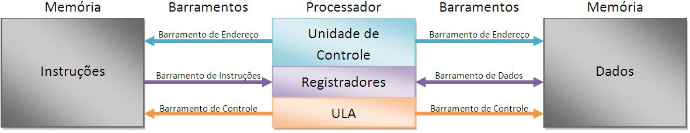

OAC
Arquitetura de Von Neumman vs Arquitetura Havard
Arquitetura de Von Neumman
No inicio da Computação não existia o conceito de programa armazenado, os programas eram desenvolvidos, executados e apresentavam
os resultados imediatamente. A ideia de computador de programa armazenado mudou tudo isso, somente alguns computadores ainda
utilizam programação fixa, para fins especificos, sendo mais comum hoje em dia ser utilizado arquitetetura de von neumman que tem como
conceito a programação armazenada.
John Von Neumann e outros pesquisadores descobriram que, utilizando dispositivos de memória, poderiam armazenar instruções de programas.Esse modelo de arquitetura proposto por Von Neumann é baseado em três características básicas:
- Dados e as instruções ficam armazenadas no mesmo espaço de memória;
- Cada espaço de memória possui um endereço, onde é utilizado para identificar a posição de um conteúdo;
- Instruções são executadas de forma sequencial.
A arquitetura de Von Neumann é composta por:
- Memória consiste em Ram, conhecida como memória principal , a RAM é dividida em partições. Onde cada uma consiste em um endereços(identificará de forma cada local na memória) e seus conteúdos.
- CPU (unidade de Processamento Central) é o circuito eletrônico que fica responsável pela execução das instruções de um programa.
- Unidade aritmética e lógica que permite operações aritméticas e lógica
- Unidade de Controle (UC) que controla as operações dos dispositivos ULA, memória e entrada/saída.
- Dispositivos de entrada e saída

Os componentes do modelo de Von Neumann comunicam-se através do barramento, no qual opera em velocidades altíssimas interligando os principais componentes do modelo.
Ciclo de execução da máquina de Von Neumann
O ciclo de execução da máquina de Von Neumman é bem simples, ocorre a busca de uma instrução, depois decodifica e a executa.
como ilustrado no fruxograma abaixo:
Gargalo de Von Neumann
É a limitação na taxa de transferência entre a cpu e a memória, a transferência é menor do que a taxa com que o processador consegue trabalhar e menor do que a quantidade de memória disponível, isso força a CPU esperar por dados que precisam ser transferidos para ou a partir de outra memórias.
O gargalo de Von Neumman refere-se ao tráfego no barramento
- Vai endereço da instrução volta instrução
- Vão endereços dos operandos
- Vão e voltam operandos
Para elinar gargalo: diminuir tráfego de informações
- Manter informações na CPU
- Diminuir tamanho em bits das informações transferidas
- Inclusão de registradores
Uso da arquiterura de Von Neumman
Exemplos de microprocessadores baseados em arquitetura Von Neumann:
ARM7 e Pentium
Arquitetura Harvard
A arquitetura de Havard surgiu durante a guerra mundial e veio com a proposta de tornar o trabalho do microcontrolador mais rapido, utilizando duas memorias diferentes. O nome arquitura harvad vem do computador Mark I. É utilizada nos microcontroladores PIC e tem como característica o acesso a memória de dados de modo separado em relação a memória de programa e também na separação de barramentos, tendo o barramento de onde estão as instruções de programa e das memórias de dados, dessa forma permite que o processador possa acessar as duas simultaneamente, por meio do qual obtem um desenpenho melhor do que a arquitetura de Von Neumman, pois pode buscar uma nova instrução enquanto executa outra. Outra grande característica da arquitetura harvarde é por possuir um repertório com menos instuções que a de Von Neumann e são executadas com a apenas um ciclo de clock.
Uso da arquitetura Harvad
Exemplos de microprocessadores baseados em arquitetura Harvard:
ARM9 e SHARC (DSP)
Conclusão
Essas duas arquiteturas tem como principais diferenças na sua organização e arquitetura, a arquitetura havard possui dois barramentos separados de dados e instruções, isso permite que as transferências sejam realizadas em ambos barramentos simultaneamente, enquanto a arquitetura de Von Neumman possui apenas um barramento que é utilizado para transferências de dados e busca de instruções, ou seja as buscas de instruções não podem ser realizadas ao mesmo tempo. A seguir mais algumas diferenças entre as duas arquitetura:
Harvard
- Memórias separadas para dados e instruções
- Dois barramentos de endereço/dados entre CPU e memória.
- Cpu pode ler uma instrução e executar uma um acesso à memória de dados simultaneamente.
- O processador pode completar uma instrução em um ciclo se as estratégias de pipeline adequadas forem implementadas.
Von Neumman
- A arquitetura de Von Neumann usa os mesmos barramentos para instruções e dados.
- Possui o mesmo conjunto barramentos de dados e de endereços para instruções de leitura/gravação de memória e busca.
- A CPU só pode ler uma instrução ou escrever dados para a memória.
Ambos não podem ocorrer ao mesmo tempo, pois as instruções e os dados utilizam o mesmo barramento. - Possui o mesmo endereço de dados e o endereço da instrução.